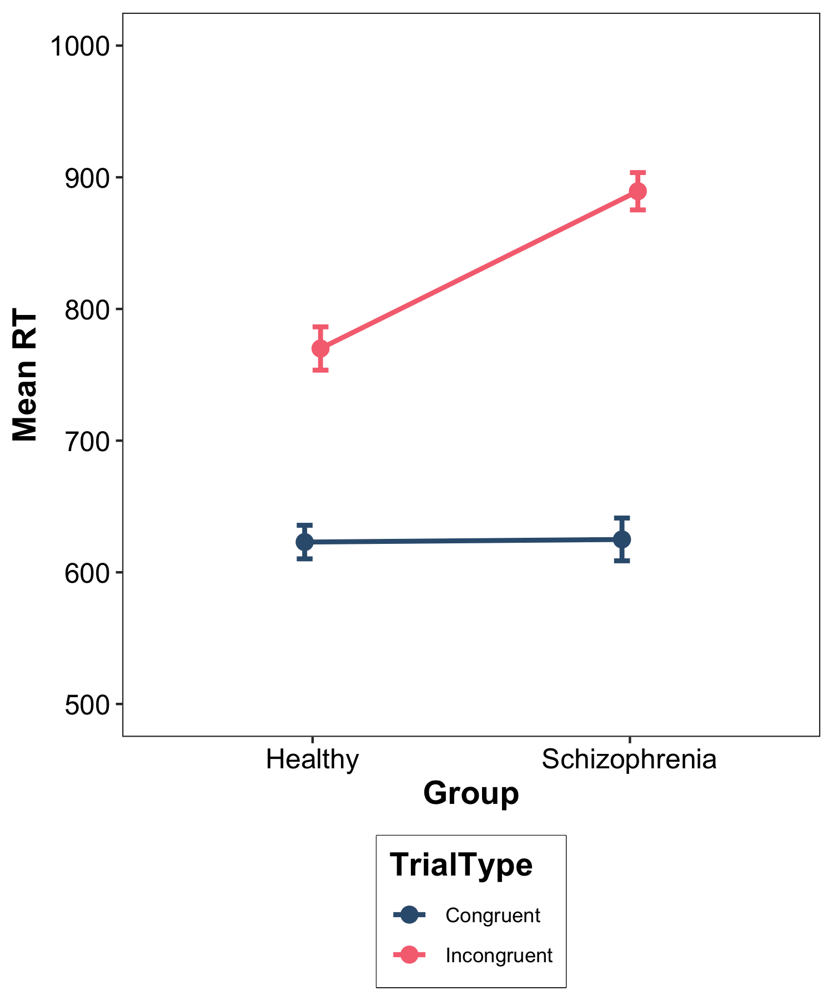
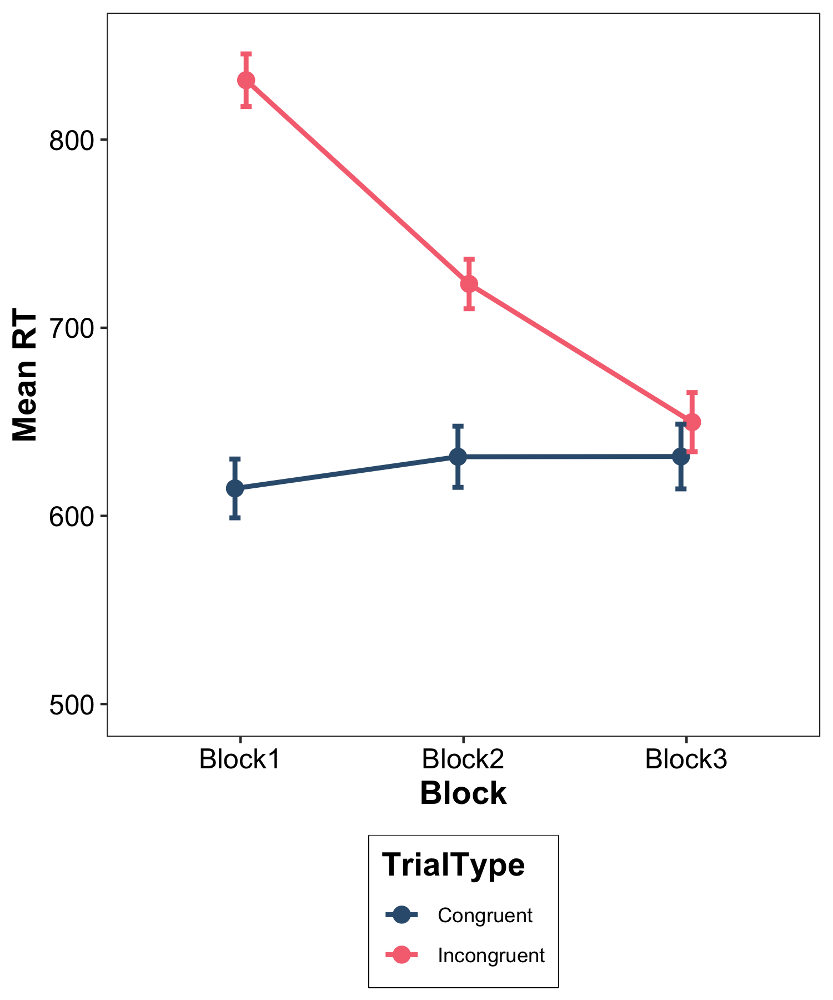

setwd("~/psyc214_lab_8")8. Two-Factor Mixed and Within-Participants ANOVA
Mark Hurlstone, Sam Russell
Lab
If, at some point in your life, you should come across anything better than justice, truth, self-control, courage—it must be an extraordinary thing indeed. —Marcus Aurelius, The Meditations
Learning Objectives
In this week’s lecture, we considered the procedures involved in performing a two-factor mixed and fully-within participants ANOVA. Using the hypothetical data on the Stroop effect presented in the lecture, in today’s lab session we will demonstrate how to analyse such ANOVA designs in R, including the calculation of the simple main effects and follow up procedures for breaking down simple main effects of factors with three or more levels. We will also demonstrate how to write up the results of two-factor mixed and fully within-participants designs.
If you get stuck at any point, be proactive and ask for help from one of the GTAs.
Getting Started
To log in to the R server, first make sure that you have the VPN switched on, or you will need to be connected to the university network (Eduroam). To set up the VPN, follow ISS instructions here or connecting to Eduroam here.
When you are connected, navigate to https://psy-rstudio.lancaster.ac.uk, where you will be shown a login screen that looks like the below. Click the option that says “Sign in with SAML”.

This will take you through to the University login screen, where you should enter your username (e.g. ivorym) and then your university password. This will then redirect you to the R server where you can start using RStudio!


Note
If you have already logged in through the university login already, perhaps to get to the portal, then you may not see the username/password screen. When you click login, you will be redirected straight to RStudio. This is because the server shares the login information securely across the university.
Once you are logged into the server, create a folder for today’s session. Navigate to the bottom right panel and under the Files option select the New Folder option. Name the new folder psyc214_lab_8. Please ensure that you spell this correctly otherwise when you set the directory using the command given below it will return an error.
Se we can save this session on the server, click File on the top ribbon and select New project. Next, select existing directory and name the working directory ~/psyc214_lab_8 before selecting create project.
Finally, open a script for executing today’s coding exercises. Navigate to the top left pane of RStudio, select File -> New File -> R Script. Working from a script will make it easier to edit your code and you will be able to save your work for a later date.
Let’s set our working directory:
Now that you have created a folder for today’s session, it’s time to add the Week 8 files. Download the data and files needed for this lab here and save to the newly created folder psyc214_lab_8.
Before moving on, let’s load the relevant libraries/functions that we will be using in today’s session.
library("tidyverse") # For data storage and manipulation
library("tidyr") # For tidy data
library("rstatix") # For descriptives statistics, outlier detection, running the ANOVAs etc.
source("simple.R") # Custom function for generating the simple main effectsNote that the custom function simple.R that we use to calculate the simple main effects must be present in your directory whenever you seek to use it.
Today’s Lab Activities
Analysing hypothetical data for the mixed-design Stroop experiment
We begin by analysing the mixed-design Stroop experiment described in the lecture. Recall that in this experiment, a researcher wants to test the hypothesis that response inhibition—the ability to suppress task-irrelevant information—is impaired in patients with schizophrenia. She predicts that if this is true, then a group of patients with schizophrenia will show a larger Stroop effect than a group of healthy controls. Our researcher administers a multi-trial Stroop task to two groups of participants in a 2 (group: healthy vs. schizophrenia) \(\times\) 2 (trial type: congruent vs. incongruent) mixed design, where group is a between-participants factor and trial type is a within-participants factor.
The data set contains four columns:
Participant: represents the participant number, which ranges from 1–80, with \(N\) = 40 participants in each of the four conditions resulting from the combination of our two factors.
Group: represents whether the participant belongs to the healthy control group (Healthy) or the schizophrenia group (Schizophrenia).
Congruent: represents the mean response time, averaged across trials, for congruent trials in which the colour word and the ink it is presented in are the same.
Incongruent: represents the mean response time, averaged across trials, for incongruent trials in which the colour word and the ink it is presented in are different.
Import data, set variables as factors, generate descriptive statistics, and perform assumption checks
The first thing you need to do is load the data into RStudio. Make sure that you name your data frame as stroopMixed.
# A tibble: 80 × 4
Participant Group Congruent Incongruent
<dbl> <chr> <dbl> <dbl>
1 1 Healthy 586 906
2 2 Healthy 608 773
3 3 Healthy 609 887
4 4 Healthy 621 775
5 5 Healthy 642 699
6 6 Healthy 593 707
7 7 Healthy 616 850
8 8 Healthy 721 763
9 9 Healthy 631 760
10 10 Healthy 639 740
# ℹ 70 more rowsThe next thing we need to do is convert the Participant variable into a factor. We can do this with the following code:
# Convert "Participant into factor
stroopMixed$Participant = factor(stroopMixed$Participant)Once you have done this, you need to convert the Group variable into a factor. We’ll let you do this yourself using your own code:
The next thing we need to do is convert our data from wide format into long format. Sam discussed the distinction between these two formats in his Week 4 lab session and we covered it again in our Week 5 lab session. In brief, we need to create a new variable called TrialType that contains the different levels of this factor, congruent and incongruent, which are currently located in different columns. We can do this using the following piece of code which users the gather() function encountered previously:
# Convert data into long format
stroopMixedLong = gather(stroopMixed,TrialType,RT,Congruent:Incongruent,factor_key = TRUE)Let’s unpack what this is doing. The first argument to gather(), stroopMixed, is the name of our current data set in wide format. The second argument tells R we want a new column called TrialType. The third argument, RT, tells R the name of our dependent variable. The fourth argument tells R to take the columns Congruent through to Incongruent and combine them into a column labeled TrialType (our second argument). The final argument, factor_key = TRUE, tells R that we want this new column to be a factor. The results of this transformation are allocated to a new data frame called stroopMixedLong. This contains our data in long format and we will be using this version of the data set from henceforth.
Next, we will generate some descriptive statistics (mean, standard deviation, and confidence intervals). You did this for a between-participants factorial design in last week’s seminar, so you can once again generate the code for this yourself.
If you have executed the code correctly, then you should see the following output:
Group TrialType variable n mean sd ci
1 Healthy Congruent RT 40 622.975 39.852 12.745
2 Healthy Incongruent RT 40 769.975 51.399 16.438
3 Schizophrenia Congruent RT 40 624.975 50.803 16.247
4 Schizophrenia Incongruent RT 40 889.400 44.334 14.179At this stage, we would ordinarily perform various checks including identifying possible outliers and checking that our data satisfy the normality assumption. We won’t perform those checks today, not because they are not important (they most certainly are!), but rather because we don’t have the time to do so. There is one check that we will perform and that is to see if the homogeneity of variance assumption has been violated. In a mixed design like ours, the homogeneity of variance assumption only applies to the between-participants factors, but not the within-participants factors.
Our between-participants factor is Group (healthy vs. schizophrenia) but remember that each group receives each level of our within-participants factor TrialType (congruent vs. incongruent). So, we need to test whether the variances are equal or not for the healthy and schizophrenia groups for congruent and incongruent trials separately. The following code will generate what we need:
stroopMixedLong %>%
# Organise the output by the "TrialType" factor
group_by(TrialType) %>%
# Generate Levene's test on the "Group" factor
levene_test(RT ~ Group)# A tibble: 2 × 5
TrialType df1 df2 statistic p
<fct> <int> <int> <dbl> <dbl>
1 Congruent 1 78 3.95 0.0505
2 Incongruent 1 78 0.747 0.390 Levene’s test is non-significant for congruent trials, p = .051 (although notice that it is only marginally short of significance), and also for incongruent trials, p = .390. So, we can safely assume that the homogeneity of variance assumption has been satisfied.
Running the mixed ANOVA
To run our ANOVA, we are going to use the anova_test function from the rstatix package. This is the function that I recommend you use for mixed or fully-within participants factorial designs. The code required to run the ANOVA is given below:
# Create the mixed design ANOVA model
stroopMixedModel = anova_test(data = stroopMixedLong, dv = RT, wid = Participant, between = Group, within = TrialType, detailed = TRUE)
# Print the model summary
(stroopMixedModel)ANOVA Table (type II tests)
Effect DFn DFd SSn SSd F p p<.05 ges
1 (Intercept) 1 78 84525386.6 136336.6 48358.096 1.06e-110 * 0.996
2 Group 1 78 147440.3 136336.6 84.353 4.74e-14 * 0.301
3 TrialType 1 78 1692705.3 205941.9 641.108 2.27e-39 * 0.832
4 Group:TrialType 1 78 137886.3 205941.9 52.224 2.91e-10 * 0.287To create the model, the first argument we supplied to anova_test was the name of our data, stroopMixedLong. The second argument we supplied was our dependent variable, RT. The third argument we supplied was Participant, which is the column containing the individuals/participants identifier. The fourth argument we supplied was our between-participants factor, Group. The fourth argument we supplied was our within-participants factor, TrialType.
Notice that the resulting ANOVA table is different in format to those given in the lecture. The format given in the lecture follows a standard convention, but anova_test frustratingly uses a different format. The main effects of Group, TrialType, and the Group:TrialType interaction are each given on separate rows. The row corresponding to each effect contain the between-group degrees of freedom (DFn), the error degrees of freedom (DFd), the between-group sums of squares (SSn), the error sums of squares (SSd), the \(F\) ratio (F), and the p (p) value. On the bright side, this organisation makes it easier to locate the correct degrees of freedom when reporting the different outcomes.
Looking at our ANOVA table, we can see that there is a significant main effect Group, p \(<\) .001. Inspecting our descriptive statistics, we can see that this arose because mean response times are longer for the schizophrenia group than the healthy group. There is also a significant main effect of Trial Type, p \(<\) .001, which arose because mean response times are longer for incongruent than congruent trials. Finally, there is a significant interaction between the two factors, p \(<\) .001. We will defer interpretation of this interaction until later, once we have calculated the simple main effects and plotted the data. By the way, you can just ignore the first row of the table with the outcome named “intercept”.
Before we calculate the simple main effects, notice that the ANOVA table generated by anova_test does not give us the between-group mean squares or the error mean squares that are used to calculate the \(F\) ratios. This is a rather silly omission, and I’m not sure why the creators of the rstatix package thought it would be wise to exclude these. Now, you don’t need these values to interpret and report your ANOVA, but I do need to extract these values, so I can show you which error term is being used to test the different ANOVA outcomes and the simple main effects that we will calculate shortly.
So, we are going to calculate the mean squares for ourselves. We will first calculate the between-group mean squares. The between-group mean square is simply the between-group sums of squares (SSn) divided by its corresponding degrees of freedom (DFn). We can calculate this as follows:
# Calculate the between-group mean sum of squares
mixedMeanSquareBetween = stroopMixedModel$SSn/stroopMixedModel$DFn
# Exclude the intercept (row 1 of 4) from the results
mixedMeanSquareBetween[2:4][1] 147440.3 1692705.3 137886.3The first value is the between-group mean square for the main effect of Group (147440.3), the second value is the between-group mean square for the main effect of Trial Type (1692705.3), and the third value is the between-group mean square for the interaction (137886.3).
Next, we will calculate the error mean squares. The error mean square is simply the error sums of squares (SSd) divided by its corresponding degrees of freedom (DFd). We can calculate this as follows:
# Calculate the error mean sum of squares
mixedMeanSquareError = stroopMixedModel$SSd/stroopMixedModel$DFd
# Exclude the intercept (row 1 of 4) from the results
mixedMeanSquareError[2:4][1] 1747.906 2640.281 2640.281The first value is the error mean square for the main effect of Group (1747.906), the second value is the error mean square for the main effect of Trial Type (2640.281), and the third value is the error mean square for the interaction (2640.281). Recall that in the lecture, we saw that in a mixed design, the error term for the within-participants factor is used to test both the main effect of that factor and any interaction involving that factor. Sure enough, we can see that the error term for testing the main effect of our within-participants factor, Trial Type, is the same as the one used to test the interaction (i.e., 2640.281).
Remember that the \(F\) ratio for each outcome is calculated by dividing its between-group mean square by its error mean square. So, let’s calculate the \(F\) ratios for ourselves and check they align with what has been given to us in our ANOVA table. We can do that with the following code:
# Calculate F ratios
mixedFRatios = mixedMeanSquareBetween/mixedMeanSquareError
# Print the results, excluding the intercept
(mixedFRatios[2:4])[1] 84.35256 641.10811 52.22411The first \(F\) ratio is for the main effect of Group (84.353), the second is for the main effect of Trial Type (641.108), and the third is for the interaction (52.224). If you compare these \(F\) values with those given in the ANOVA table, you will see that they are identical.
To be clear, when conducting a mixed ANOVA in the future, you don’t need to go through the steps of calculating the mean squares. I have gone through these steps with you because I need to make it clear what error terms we are using to test the different ANOVA outcomes and our simple main effects.
Simple main effects analysis
Since the interaction is significant, we need to calculate the simple main effects. Last week, when calculating the simple main effects for a fully-between participants design, we used the testInteractions() function in the phia package. Unfortunately, this package cannot be used with mixed and fully within-participants designs. Accordingly, I have created a custom function called simple() that will compute the simple main effects for you.
Recall from the lecture that for mixed and within-participants factorial designs, we use an approach to calculating the simple main effects known as the pooled error terms approach. What this means is that the simple main effects of each factor are calculated using the same error term. However, the error term we use will differ depending on the factor for which we are calculating the simple main effects (contrast this approach with that we used for calculating the simple main effects in a fully between-participants design, where we used the same error term to calculate the simple main effects of all factors).
Before we can calculate the simple main effects, there are a few things we need to do. First, we need to store our ANOVA table in a dataframe:
# Get the mixed ANOVA table
mixedAnovaTable = get_anova_table(stroopMixedModel)Next, we need to calculate the cell totals for each of the four conditions and the number of observations (i.e., scores) in each cell:
# Get cell totals and counts
mixedCellTotals = stroopMixedLong %>%
# Organise the output by the"Group" and "TrialType" factors
group_by(TrialType, Group) %>%
# Request cell totals and number of observations (i.e., scores)
summarise(sum = sum(RT),n = n())
# Print the results
(mixedCellTotals)# A tibble: 4 × 4
# Groups: TrialType [2]
TrialType Group sum n
<fct> <fct> <dbl> <int>
1 Congruent Healthy 24919 40
2 Congruent Schizophrenia 24999 40
3 Incongruent Healthy 30799 40
4 Incongruent Schizophrenia 35576 40Then, we need to specify which simple main effects we want to generate. We are first going to calculate the simple main effects of the factor Group at Trial Type. This means, we are going to:
- Test the difference between the healthy and schizophrenia groups for congruent trials only.
- Test the difference between the healthy and schizophrenia groups for incongruent trials only.
To do this, we need to declare Group as the “fixed” factor (we are always comparing the healthy and schizophrenia groups) and Group as the “across” factor (the comparison between the healthy and schizophrenia groups occurs “across” the congruent and incongruent levels of the Trial Type factor):
# Create "fixed" and "across" factors
fixed = "Group"
across = "TrialType"To get the simple main effects, we pass the cell totals, ANOVA table, and the fixed and across factors to our function simple():
# Simple main effects of Group at Trial Type
mixedSmeGroup = simple(mixedCellTotals,mixedAnovaTable,fixed,across)
(mixedSmeGroup) Levels Sum of Squares Degrees of Freedom Mean Square F
1 Congruent 80.0 1 80.000 0.04576906
2 Incongruent 285246.6 1 285246.612 163.19337388
3 Error term 136336.6 78 1747.906 0.00000000
P
1 8.311544e-01
2 8.245446e-21
3 0.000000e+00As described in the lecture, to calculate the simple main effects of a given factor in a mixed design, we use the mean square error for the main effect of that factor from the original ANOVA table as the error term. The mean square error in the simple main effects table is given in column four (Mean Square) of row three (Error term). You will notice that this is the error mean square for the main effect of Group that we calculated earlier from our initial ANOVA table (i.e., 1747.906). If you divide the between-group mean squares for the effect of Group at congruent and incongruent trials by this value, it will give you the \(F\) ratios shown in the simple main effects table.
Looking at the simple main effects, we can see that the simple main effect of Group at congruent trials is not significant, \(p\) = 0.831. This indicates that mean response times for congruent trials did not differ between the healthy and schizophrenia groups. However, the simple main effect of Group at incongruent trials is significant, \(p\) < .001. Looking at the descriptive statistics we generated earlier, we can see that this is because mean response times are longer on incongruent trials for the schizophrenia group than the healthy group.
Next, we are going to calculate the simple main effects of the factor Trial Type at Group. This means, we are going to:
- Test the difference between congruent and incongruent trials for the healthy group only.
- Test the difference between congruent and incongruent trials for the schizophrenia group only.
To do this, we now need to declare Trial Type as the “fixed” factor and Group as the “across” factor:
# Create "fixed" and "across" factors
fixed = "TrialType"
across = "Group"We then generate the simple main effects of Trial Type with the following:
# Simple main effects of Trial Type at Group
mixedSmeTrialType = simple(mixedCellTotals,mixedAnovaTable,fixed,across)
(mixedSmeTrialType) Levels Sum of Squares Degrees of Freedom Mean Square F
1 Healthy 432180.0 1 432180.000 163.6871
2 Schizophrenia 1398411.6 1 1398411.612 529.6451
3 Error term 205941.9 78 2640.281 0.0000
P
1 7.609756e-21
2 1.632592e-36
3 0.000000e+00Remember, to calculate the simple main effects of a given factor in a mixed design, we use the mean square error for the main effect of that factor from the original ANOVA table as the error term. The mean square error in the simple main effects table is given in column four (Mean Square) of row three (Error term). You will notice that this is the error mean square for the main effect of Trial Type that we calculated earlier from our initial ANOVA table (i.e., 2640.281). If you divide the between-group mean squares for the effect of Trial Type at healthy and schizophrenia groups by this value, it will give you the \(F\) ratios shown in the simple main effects table.
Looking at the simple main effects, we can see that the simple main effect of Trial Type at healthy is significant, \(p\) \(<\) .001. Inspecting our descriptive statistics, we can see that this is because for the healthy group, mean response times are longer for incongruent than congruent trials. The simple main effect of Trial Type at schizophrenia is also significant, \(p\) \(<\) .001. Looking at our descriptive statistics, we can see that this is because for the schizophrenia group, mean response times are also longer for incongruent than congruent trials. Thus, both the healthy and schizophrenia groups show a Stroop effect (longer response times for incongruent than congruent trials), but the effect is larger for the schizophrenia group, which has a much smaller \(p\) value (and a correspondingly larger \(F\) ratio).
Writing up the results

Figure 1 shows mean response times as a function of the group and trial type manipulations. These data were subjected to a 2 (group: healthy vs. schizophrenia) \(\times\) 2 (trial type: congruent vs. incongruent) mixed Analysis of Variance. There was a significant main effect of group, F(1, 78) = 84.35, p \(<\) .001, with longer response times in the schizophrenia group than the healthy group, a significant main effect of trial type, F(1, 78) = 641.11, p < .001, with longer response times for incongruent than congruent trials, and a significant interaction between the two factors, F(1, 78) = 52.22, p < .001.
To scrutinise the interaction, a simple main effects analysis was undertaken. For the simple main effects of group at trial type, response times on congruent trials did not differ significantly between the healthy and schizophrenia groups, F(1, 78) = .05, p = .831, whereas response times were significantly longer on incongruent trials for the schizophrenia group compared to the healthy group, F(1, 78) = 163.19, p \(<\) .001. For the simple main effects of trial type at group, response times were significantly longer on incongruent trials than congruent trials for the healthy group, F(1, 78) = 163.69, p \(<\) .001, and for the schizophrenia group, F(1, 78) = 529.65, p \(<\) .001, although the effect was larger for the schizophrenia group.
Hence, the interaction arose because the schizophrenia group demonstrated a larger Stroop effect than the healthy group and this was due to longer response times on incongruent, but not congruent, trials.
Analysing hypothetical data for the fully within-participants Stroop experiment
We turn now to an analysis of the fully within-participant Stroop experiment described in the lecture. In this experiment, a researcher wants to examine whether the magnitude of the Stroop effect decreases with practice at the task. The Stroop task is administered over three successive blocks of trials and the expectation is that the magnitude of the Stroop effect will decrease gradually across blocks. She administers a multi-trial Stroop task to a single group of participants in a 2 (trial type: congruent vs. incongruent) \(\times\) 3 (block: block 1 vs. block 2 vs. block 3) fully within-participants design.
The data set contains seven columns:
Participant: represents the participant number, which ranges from 1–40, with \(N\) = 40 participants.
Congruent_Block1: represents the mean response time, averaged across trials, for congruent trials in the first block of trials.
Congruent_Block2: represents the mean response time, averaged across trials, for congruent trials in the second block of trials.
Congruent_Block3: represents the mean response time, averaged across trials, for congruent trials in the third block of trials.
Incongruent_Block1: represents the mean response time, averaged across trials, for incongruent trials in the first block of trials.
Incongruent_Block2: represents the mean response time, averaged across trials, for incongruent trials in the second block of trials.
Incongruent_Block3: represents the mean response time, averaged across trials, for incongruent trials in the third block of trials.
Import data, set variables as factors, and generate descriptive statistics
There’s a bit to get through in this analysis, so I am going to supply the code for everything that follows. We begin, as always, by loading our data set:
# Import data
stroopWithin = read_csv("StroopWithin.csv")
(stroopWithin)# A tibble: 40 × 7
Participant Congruent_Block1 Congruent_Block2 Congruent_Block3
<dbl> <dbl> <dbl> <dbl>
1 1 627 687 563
2 2 558 681 674
3 3 635 709 575
4 4 626 673 663
5 5 610 610 643
6 6 568 655 715
7 7 635 641 573
8 8 530 677 545
9 9 613 621 638
10 10 542 607 636
# ℹ 30 more rows
# ℹ 3 more variables: Incongruent_Block1 <dbl>, Incongruent_Block2 <dbl>,
# Incongruent_Block3 <dbl>As is the case for a fully within-participants design, the data are in entirely wide format and we need to get them into long format for the analysis. We are going to start by grouping the columns Congruent_Block1 through to Incongruent_Block3 into a new variable called Group using the gather function used previously:
# Convert data into long format
stroopWithinLong = stroopWithin %>%
gather(Group,RT,Congruent_Block1:Incongruent_Block3,factor_key = TRUE)
(stroopWithinLong)# A tibble: 240 × 3
Participant Group RT
<dbl> <fct> <dbl>
1 1 Congruent_Block1 627
2 2 Congruent_Block1 558
3 3 Congruent_Block1 635
4 4 Congruent_Block1 626
5 5 Congruent_Block1 610
6 6 Congruent_Block1 568
7 7 Congruent_Block1 635
8 8 Congruent_Block1 530
9 9 Congruent_Block1 613
10 10 Congruent_Block1 542
# ℹ 230 more rowsThe first argument to gather() tells R we want to create a variable called Group. The second argument tells R that RT is the dependent variable. The third argument, Congruent_Block1:Incongruent_Block3, tells R that we want to bundle the columns Congruent_Block1 through to Incongruent_Block3 into the new variable, Group. The fourth argument, factor_key = TRUE, tells R that we want to make this variable a factor. The results of this transformation have been assigned to a new data frame called stroopWithinLong.
Looking at the new data frame we have created, we can see that it is not exactly what we want. Our new variable Group actually contains both of our independent variables. What we want is to separate these independent variables into two separate columns. We can do that with the separate function:
# Divide Group into seperate columns for Trial Type and Block
stroopWithinLongSep = stroopWithinLong %>%
separate(Group, c("TrialType","Block"))
(stroopWithinLongSep)# A tibble: 240 × 4
Participant TrialType Block RT
<dbl> <chr> <chr> <dbl>
1 1 Congruent Block1 627
2 2 Congruent Block1 558
3 3 Congruent Block1 635
4 4 Congruent Block1 626
5 5 Congruent Block1 610
6 6 Congruent Block1 568
7 7 Congruent Block1 635
8 8 Congruent Block1 530
9 9 Congruent Block1 613
10 10 Congruent Block1 542
# ℹ 230 more rowsThis bit of code tells R to separate the variable Group into two new variables, one called TrialType and one called Block. The results are stored in a new data frame called stroopWithinLongSep, which is the data frame we will be using henceforth. Looking at this data frame we can see that our transformation has had the desired effect—we now have two new columns corresponding to each of our two independent variables.
However, our two new variables are currently stored as characters (they have the labels <chr> beneath the variable names) and we need to convert them to factors. We also need to convert the Participant variable into a factor. So, let’s do that next:
# Convert variables into factors
stroopWithinLongSep$Participant = factor(stroopWithinLongSep$Participant)
stroopWithinLongSep$TrialType = factor(stroopWithinLongSep$TrialType)
stroopWithinLongSep$Block = factor(stroopWithinLongSep$Block)Right, now is as good a time as any to get some descriptive statistics:
# Get descriptive statistics
withinDescriptives = stroopWithinLongSep %>%
# Organise the output by the"TrialType" and "Block" factors
group_by(TrialType, Block) %>%
# Request means, standard deviations, and confidence intervals
get_summary_stats(RT, show = c("mean","sd","ci"))
# Print the results
print.data.frame(withinDescriptives) TrialType Block variable n mean sd ci
1 Congruent Block1 RT 40 614.600 48.878 15.632
2 Congruent Block2 RT 40 631.425 50.834 16.257
3 Congruent Block3 RT 40 631.575 53.848 17.221
4 Incongruent Block1 RT 40 831.625 43.653 13.961
5 Incongruent Block2 RT 40 723.300 41.229 13.186
6 Incongruent Block3 RT 40 649.850 49.131 15.713Time is limited, so we are once again going to skip over the usual checks, which you should otherwise always perform.
However, because one of our within-participants factors contains three levels (i.e., Block) there is one check that will be performed when we run the ANOVA. Specifically, this is a check to establish whether the sphericity assumption has been violated. Sam introduced you to this assumption when he discussed single-factor within-participants ANOVA, so I will only describe it briefly. The sphericity assumption states that for a within-participants design with three or more levels, the variance of the difference scores between one pair of levels should not differ significantly from the variances of the difference scores for every other possible pair of levels.
The assumption is tested using Mauchly’s test of sphericity, which is applied to any outcome involving a factor with three or more levels. If the test result is significant, then the assumption has been violated. If this occurs, then we must adopt the Greenhouse-Geisser correction for violations of this assumption.
Running the mixed ANOVA
To run our ANOVA, we are once again going to use the anova_test function from the rstatix package. The code required to run the ANOVA is given below:
# Create the within-participants design ANOVA model
stroopWithinModel = anova_test(data = stroopWithinLongSep, dv = RT, wid = Participant, within = c(TrialType, Block), detailed = TRUE)
(stroopWithinModel)ANOVA Table (type III tests)
$ANOVA
Effect DFn DFd SSn SSd F p p<.05 ges
1 (Intercept) 1 39 111105237.6 77509.9 55903.885 3.54e-63 * 0.995
2 TrialType 1 39 713623.2 84476.3 329.457 1.28e-20 * 0.568
3 Block 2 78 272694.5 221792.5 47.951 2.63e-14 * 0.335
4 TrialType:Block 2 78 403873.6 158005.4 99.687 3.25e-22 * 0.427
$`Mauchly's Test for Sphericity`
Effect W p p<.05
1 Block 0.949 0.368
2 TrialType:Block 0.952 0.394
$`Sphericity Corrections`
Effect GGe DF[GG] p[GG] p[GG]<.05 HFe DF[HF] p[HF]
1 Block 0.951 1.9, 74.2 1.01e-13 * 0.999 2, 77.9 2.72e-14
2 TrialType:Block 0.954 1.91, 74.44 2.61e-21 * 1.002 2, 78.17 3.25e-22
p[HF]<.05
1 *
2 *To create the model, the first argument we supplied to anova_test was the name of our data, stroopWithinLongSep. The second argument we supplied was our dependent variable, RT. The third argument we supplied was Participant, which is the column containing the individuals/participants identifier. The fourth argument we supplied was our two within-participants factors, TrialType and Block.
The ANOVA output now contains three tables. The first is the main ANOVA table, which is organised in the same format as that produced for our mixed design example from earlier.
The second table presents the results of Mauchly’s test of sphericity, which has been applied to the factor Block, which has three levels, and the interaction between Trial Type and Block. In both instances, we can see that the test result is non-significant, which means the sphericity assumption has been met.
The third table gives the Greenhouse-Geisser corrected ANOVA table for the main effect of Block and the interaction between Trial Type and Block. Had we violated the sphericity assumption, it is these values that we would report when writing up our ANOVA, instead of the values taken from the original ANOVA table (the main effect of Trial Type would be drawn from the original ANOVA table as it only has two levels, and therefore the sphericity assumption does not apply to this outcome). Because we did not violate the sphericity assumption on this occasion, we can focus solely on the original ANOVA table.
You may at this point be wondering why Mauchly’s test of sphericity and the Greenhouse-Geisser correction were not produced when we ran the ANOVA for our mixed design example. The answer is simple; for that design our within-participants factor only contained two levels, so the sphericity assumption did not apply. The anova_test function only generates these tests and corrections when at least one of the within-participants factors has three or more levels.
Let’s redirect our attention to the original ANOVA table. We can see that there is a significant main effect Trial Type, p \(<\) .001. Looking at our descriptive statistics, we can see that this arose because response times are longer for incongruent than congruent trials. There is also a significant main effect of Block, p \(<\) .001, which arose because response times get quicker across blocks as participants obtain more experience with the task. There is also a significant interaction between the two factors, p \(<\) .001. We will defer interpretation of this interaction until later, once we have calculated the simple main effects and plotted the data.
As for our mixed design example, the ANOVA table does not include the mean square values for the outcomes. Previously, we calculated the between-group and error mean squares for ourselves, and verified that these produced the obtained \(F\) ratios when we divided the former by the latter. This time, we will just generate the error mean squares. Again, this is so I can show you which error term is being used to test each ANOVA outcome and the simple main effects of each factor.
# Calculate the error mean sum of squares
withinMeanSquareError = stroopWithinModel$ANOVA$SSd/stroopWithinModel$ANOVA$DFd
# Exclude the intercept (row 1 of 4) from the results
withinMeanSquareError[2:4][1] 2166.059 2843.493 2025.710The first value is the error mean square for the main effect of Trial Type (2166.059), the second value is the error mean square for the main effect of Block (2843.493), and the third value is the error mean square for the interaction (2025.710). Recall that in the lecture, we saw that in a fully within-participants design the two main effects and the interaction each have their own error terms, and sure enough we can see that the error term is different for each outcome.
Simple main effects
Since our interaction is once again significant, we need to proceed to calculate the simple main effects. Before we can calculate the simple main effects, there are a few things we need to do. First, we need to store our ANOVA table in a dataframe:
# Get ANOVA table
withinAnovaTable = get_anova_table(stroopWithinModel)Next, we need to calculate the cell totals for each of the six conditions and the number of observations (i.e., scores) in each cell:
# Calculate cell totals and counts
withinCellTotals = stroopWithinLongSep %>%
# Organise the output by the TrialType" and "Block" factors
group_by(TrialType, Block) %>%
# Request cell totals and number of observations (i.e., scores)
summarise(sum = sum(RT),n = n())
# Print the results
(mixedCellTotals)# A tibble: 4 × 4
# Groups: TrialType [2]
TrialType Group sum n
<fct> <fct> <dbl> <int>
1 Congruent Healthy 24919 40
2 Congruent Schizophrenia 24999 40
3 Incongruent Healthy 30799 40
4 Incongruent Schizophrenia 35576 40Then, we need to specify which simple main effects we want to generate. We are first going to calculate the simple main effects of the factor Trial Type at Block. This means, we are going to:
- Test the difference between congruent and incongruent trials for Block 1 only.
- Test the difference between congruent and incongruent trials for Block 2 only.
- Test the difference between congruent and incongruent trials for Block 3 only.
Notice that because Trial Type has only two levels, the simple main effects of this factor involve only pairwise comparisons. To generate these simple main effects, we need to declare Trial Type as the “fixed” factor (we are always comparing the congruent and incongruent trials) and Block as the “across” factor (the comparison between the congruent and incongruent trials occurs “across” the Block 1, Block 2, and Block 3 levels of the Block factor):
# Create "fixed" and "across" factors
fixed = "TrialType"
across = "Block"To get the simple main effects of Trial Type, we pass the cell totals, ANOVA table, and the fixed and across factors to our function simple():
# Simple main effects of Trial Type at Block
withinSmeTrialType = simple(withinCellTotals,withinAnovaTable,fixed,across)
(withinSmeTrialType) Levels Sum of Squares Degrees of Freedom Mean Square F
1 Block1 941997.012 1 941997.012 434.889848
2 Block2 168820.312 1 168820.312 77.938931
3 Block3 6679.512 1 6679.512 3.083717
4 Error term 84476.296 39 2166.059 0.000000
P
1 9.362214e-23
2 7.711308e-11
3 8.693084e-02
4 0.000000e+00As described in the lecture, to calculate the simple main effects of a given factor in a within-participants design, we use the mean square error for the main effect of that factor from the original ANOVA table as the error term. The mean square error in the simple main effects table is given in column four (Mean Square) of row three (Error term). You will notice that this is the error mean square for the main effect of Trial Type that we calculated earlier from our initial ANOVA table (i.e., 2166.059). If you divide the between-group mean squares for the effect of Trial Type at Block 1, Block 2, and Block 3 by this value, it will give you the \(F\) ratios given in the simple main effects table.
Looking at the simple main effects, we can see that the simple main effect of Trial type at Block 1 is significant, \(p\) \(<\) .001. Looking at our table of descriptive statistics, we can see that this is because mean response times for incongruent trials were longer than for congruent trials. The simple main effect of Trial Type is also significant at Block 2, \(p\) \(<\) .001, again reflecting longer mean response times for incongruent than congruent trials. However, the simple main effect of Trial Type at Block 3 is not significant, \(p\) = .087. Thus, we obtained a statistically reliable Stroop effect for Blocks 1 and 2, but not for Block 3.
Next, we are going to calculate the simple main effects of the factor Block at Trial Type. This means, we are going to:
- Test the differences between Block 1, Block 2, and Block 3 for congruent trials only.
- Test the differences between Block 1, Block 2, and Block 3 for incongruent trials only.
Notice that because Block has three levels, the simple main effects of this factor involve more than simple pairwise comparisons. To test these simple main effects, we now need to declare Block as the “fixed” factor and Trial Type as the “across” factor:
# Create "fixed" and "across" factors
fixed = "Block"
across = "TrialType"We then generate the simple main effects of Block with the following:
# Simple main effects of Block at Trial Type
withinSmeBlock = simple(withinCellTotals,withinAnovaTable,fixed,across)
(withinSmeBlock) Levels Sum of Squares Degrees of Freedom Mean Square F
1 Congruent 7616.717 2 3808.358 1.339324
2 Incongruent 668951.450 2 334475.725 117.628461
3 Error term 221792.467 78 2843.493 0.000000
P
1 2.679808e-01
2 2.828545e-24
3 0.000000e+00Remember, to calculate the simple main effects of a given factor in a within-participants design, we use the mean square error for the main effect of that factor from the original ANOVA table as the error term. The mean square error in the simple main effects table is given in column four (Mean Square) of row three (Error term). You will notice that this is the error mean square for the main effect of Block that we calculated earlier from our initial ANOVA table (i.e., 2843.493). If you divide the between-group mean squares for the effect of Block at congruent and incongruent trials by this value, it will give you the \(F\) ratios given in the simple main effects table.
Looking at the simple main effects, we can see that the simple main effect of Block at congruent trials is not significant, \(p\) = .268. Hence, mean response times do not differ reliably across blocks for congruent trials. However, the simple main effect of Block at incongruent trials is significant, \(p\) \(<\) .001. Since there are three levels in the factor Block, this significant simple main effect is like the outcome of a significant single-factor ANOVA with three levels—it tells us that there are differences between the group means, but it does not tell us where they are located. To find out, we need to perform some follow up tests. We have a few options available to us.
Suppose we hypothesised the interaction from the beginning and that we are only interested in the difference between Block 1 and Block 2, and Block 2 and Block 3 for incongruent trials, but we are not interested in the third comparison, which is between Block 1 and Block 3. In this case, we would have specified planned comparisons, because we do not intend to conduct all possible comparisons, only the ones relevant to testing our specific hypotheses. In this case, we could simply run two repeated measures \(t\)-tests, one comparing Block 1 and Block 2 at incongruent trials, and one comparing Block 2 and Block 3 at incongruent trials. Should we apply the Bonferroni correction to these comparisons? One rule of thumb is that if the number of comparisons is one less than the number of levels, i.e., (\(a\)-1) comparisons where \(a\) is the number of levels in the factor, then we do not need to apply the Bonferroni correction. In our case, our simple main effect has three levels and we are conducting two comparisons, which is one less than the number of levels, so we can proceed without using the Bonferroni correction (for those occasions where there are four or more levels, this rule of thumb does not apply and you should definitely use the Bonferroni correction). Alternatively, suppose we did not specify at the outset which comparisons we would perform if the interaction was significant. In this case, we would perform all three comparisons and we would use a post-hoc test, such as the Tukey test.
Four our purposes, we are going to perform planned comparisons. To perform these comparisons, we first need to filter our data so that they only contain responses on incongruent trials (we are excluding responses on congruent trials). The following code gives us what we want:
# Filter the data so they only contain responses on "Incongruent" trials
filter4SME = filter(stroopWithinLongSep, TrialType == "Incongruent")
(filter4SME)# A tibble: 120 × 4
Participant TrialType Block RT
<fct> <fct> <fct> <dbl>
1 1 Incongruent Block1 863
2 2 Incongruent Block1 870
3 3 Incongruent Block1 794
4 4 Incongruent Block1 872
5 5 Incongruent Block1 813
6 6 Incongruent Block1 856
7 7 Incongruent Block1 901
8 8 Incongruent Block1 818
9 9 Incongruent Block1 799
10 10 Incongruent Block1 829
# ℹ 110 more rowsThe new data frame filter4SME is a version of our data in which only congruent trials are included. We can then use the pariwise_t_test function that you have used many times to run our \(t\)-tests (making sure to specify paired = TRUE as we want repeated measures comparisons!):
filter4SME %>%
# Generate the t-tests for the two comparisons of interest
pairwise_t_test(RT ~ Block, paired = TRUE,
# Specify the comparisons we want
comparisons = list(c("Block1","Block2"),c("Block2","Block3")))# A tibble: 2 × 10
.y. group1 group2 n1 n2 statistic df p p.adj p.adj.signif
* <chr> <chr> <chr> <int> <int> <dbl> <dbl> <dbl> <dbl> <chr>
1 RT Block1 Block2 40 40 9.90 39 3.38e-12 6.76e-12 ****
2 RT Block2 Block3 40 40 7.03 39 1.96e- 8 1.96e- 8 **** The comparison between Block 1 and Block 2 is significant, p \(<\) .001, as is the comparison between Block 2 and Block 3, p \(<\) .001. Looking at our descriptive statistics, we can see that this is because mean response times are faster for incongruent trials in Block 2 than in Block 1, and mean response times for incongruent trials are faster in turn in Block 3 than in Block 2. Thus, with practice on the Stroop task, participants responses on incongruent trials get gradually quicker.
Writing up the results

Figure 2 shows mean response times as a function of the trial type and block manipulations. These data were subjected to a 2 (trial type: congruent vs. incongruent) \(\times\) 3 (block: block 1 vs. block 2 vs block 3) fully within-participants Analysis of Variance. There was a significant main effect of trial type, F(1, 39) = 329.46, p < .001, with response times being longer for incongruent than congruent trials, a significant main effect of block, F(2, 78) = 47.95, p < .001, with response times getting quicker across blocks, and a significant interaction between the two factors, F(2, 78) = 99.69, p < .001.
To scrutinise the interaction, a simple main effects analysis was undertaken. For the simple main effects of trial type at block, response times were significantly longer on incongruent trials than congruent trials in block 1, F(1, 39) = 434.89, p < .001, and block 2, F(1, 39) = 77.94, p < .001, but not in block 3, F(1, 39) = 3.08, p = .087. Turning to the simple main effects of block at trial type, response times did not differ significantly across blocks for congruent trials, F(2, 78) = 1.34, p = .268, but they did differ significantly across blocks for incongruent trials, F(2, 78) = 117.63, p < .001. Planned comparisons revealed that response times on incongruent trials were faster in block 2 than in block 1, t(39) = 9.90, p < .001, and faster in turn in block 3 than in block 2, t(39) = 7.03, p < .001.
Hence, the interaction arose because the magnitude of the Stroop effect decreased across blocks and this was due to the speeding up of responses on incongruent, but not congruent, trials.
Additional tasks
Phew!!! We have covered a lot of ground in today’s session – well done for making it through the exercises. If you should happen to want more, then you could recreate the plots in Figures 1 and 2 by co-opting the code we used to generate line plots in lab session 6.